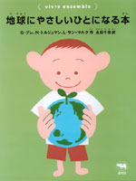
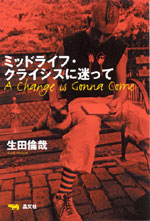
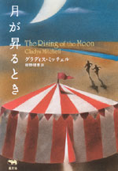
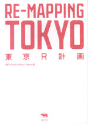
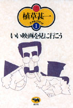
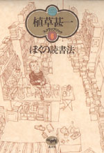
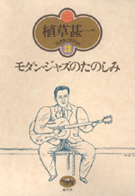
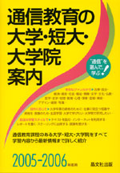
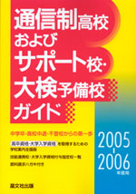

|

|
絵本・教育 | ||||||
| 地球にやさしいひとになる本 | |||||||
| G・ブレ、N・トルジュマン、L・サン＝マルク 永田千奈訳 | |||||||
| A5変型 52頁 | |||||||
| 定価1470円（本体1400円） | |||||||
| 4-7949-4733-XC8337 | |||||||
| 環境破壊が深刻化している。自然と共存し、健康な生活をしていくには何をすべきなのだろう。まずは、本書で環境とは何かを学んでみよう。生き物と自然はどんな関係にあるの？ 公害がふえ続けるとどうなる？ リサイクルって何？ 食物連鎖からゴミ問題、温暖化現象、エネルギー資源や環境保護運動までを、豊富なイラストと身近な題材でわかりやすく解説。映画 | |||||||
|
|
古本・エッセイ | ||||||
| 私の神保町 | |||||||
| 紀田順一郎 | |||||||
| 四六判 256頁 | |||||||
| 定価1890円(本体1800円） | |||||||
| 4-7949-6626-1C0095 | |||||||
| 神保町の町名の由来は江戸時代、広大な屋敷を構えていた神保伯耆守に因む。明治の市区改正後、最初の古書店・高山書店が誕生。ついで有史閣（後の有斐閣）、三省堂などが開店、明治18年頃には小川町にかけて約50軒の書籍業者が営業していたという。そんな街の記憶と一愛書家の自分史を重ね、戦後の隆盛、現在の苦境を愛惜込めて綴る。広告・デザイン | |||||||
 |
エッセイ・海外事情 |
| ミッドライフ・クライシスに迷って | |
| 生田倫哉 | |
| 四六判 256頁 | |
| 定価1680円（本体1600円） | |
| 4-7949-6635-0 C0095 | |
| 世界の大都会、夢の都ニューヨークにひとり暮らして十数年、人生の折り返し地点の年齢で突如直面してしまったアイデンティティの危機。こんな人生で良かったんだろうか、もっと自分を活かせる生き方があったのではないか…。青年期を過ぎた男のゆれる日常を、ときに鋭い文明批評をまじえながら描く、スローライフならぬローライフ・エッセイ。 |
| サッカー・現代史 | |||||||
| ディナモ ナチスに消されたフットボーラー | |||||||
| アンディ・ドゥーガン 千葉茂樹訳 | |||||||
| 四六判 240頁 | |||||||
| 定価2205円（本体2100円） | |||||||
| 4-7949-6636-9C0098 | |||||||
| 1941年、ドイツ占領下のウクライナ。ディナモ・キエフのメンバーとドイツ軍兵士のサッカー対戦が行われた。「勝ってはならない」と脅されたが、ディナモは祖国の人々のため勝利する。選手は全員が逮捕、収容所へ。全員が射殺されたとされるこの悲劇の真実を、命をとりとめた元メンバーのインタビューなどをもとに明かす、歴史ノンフィクション。 | |||||||
 |
ミステリ | ||||||
| シリーズ名／晶文社ミステリ 月が昇るとき |
|||||||
| リチャード・マクリーン 椎野淳訳 | |||||||
| 四六判 368頁 | |||||||
| 定価2520円（本体2400円） | |||||||
| 4-7949-2743-6C0397 | |||||||
| サイモンとキースの兄弟は町にやってきたサーカスを楽しみにしていた。しかし開幕日の朝、ナイフで切り裂かれた綱渡りの女性の死体が発見されたのを皮切りに、同様の手口の犯行が続発、平和な町を切裂き魔の恐怖が覆った。サイモン少年は真相を探ろうと決心するが……。猟奇連続殺人を13歳の少年の目を通して描き、不思議な詩情をたたえた傑作。 | |||||||
 |
建築・デザイン | ||||||
| 東京R計画 RE-MAPPINGTOKYO |
|||||||
| CentralEastTokyo編 | |||||||
| A5判 352頁 | |||||||
| 定価2500円（本体2381円） | |||||||
| 4-7949-6634-2 C0052 | |||||||
| 巨大開発から取り残され活気を失っている神田〜馬喰町〜日本橋〜人形町エリアを活性化させようと、地域住民たちと建築家・デザイナー・アーチストなど若いクリエイターたちが手を結んだ。そのシンボルとなるイベントがCET（CentralEastTokyo）というお祭り。都市のリノベーション（再生）をキーワードにした、新しいまちづくりのマニフェスト。 | |||||||
 |
映画 | ||||||
| シリーズ名／植草甚一スクラップ・ブック1 第一回配本 いい映画を見に行こう |
|||||||
| 植草甚一 | |||||||
| 四六判 280頁 | |||||||
| 定価1470円（本体1400円） | |||||||
| 4-7949-2561-1C0374 | |||||||
| いい映画を見たときは、「映画館を出ると、とたんにみんなに吹聴したくなる。見てない人に早く見せたくなってくる。そう言うのが嬉しい。」と語る生粋の映画中毒者J・J。懐かしのマルクス兄弟をはじめ、半世紀にわたる映画とのつきあいを集成！（解説・山田宏一） | |||||||
 |
映画 | ||||||
| シリーズ名／植草甚一スクラップ・ブック6 第一回配本 ぼくの読書法 |
|||||||
| 植草甚一 | |||||||
| 四六判 264頁 | |||||||
| 定価1470円（本体1400円） | |||||||
| 4-7949-2566-2CO390 | |||||||
| 本こそわが世界──生まれたときから本の虫だったみたいな植草さんの、きわめつけ本とつきあう法。古本屋めぐりの日録から洋雑誌の買い方、ペーパーバック談義、めずらしい本や美しい本についての話題など、書物をめぐる楽しいエッセイ満載！（解説・佐伯彰一） | |||||||
 |
映画 | ||||||
| シリーズ名／植草甚一スクラップ・ブック12 第一回配本 モダン・ジャズのたのしみ |
|||||||
| 植草甚一 | |||||||
| 四六判 256頁 | |||||||
| 定価1470円（本体1400円） | |||||||
| 4-7949-2572-7C0373 | |||||||
| 四十九歳になって、突如モダン・ジャズにとりつかれた植草さん。六〇〇時間もレコードを聴き、またたくまにジャズをマスターしてしまった。レコードの買い方からジャズ喫茶での勉強のしかたまで、もっとも人間的な芸術のよろこびを、ここにお披露目する。（解説・野口久光） | |||||||
晶文社出版の本 TEL.03-5688-6881 |
 |
学校案内 | ||
| 通信教育の大学・短大・大学院案内 2005-2006年度用 | |||
| 晶文社出版編集部編 | |||
| A5判 248頁 | |||
| 定価1680円（本体1600円） | |||
| 4-7949-9345-5 C0037 | |||
| 通信教育課程のある大学・短大・大学院全58校を、学習内容から履修方法まで詳細に紹介。法律からデザインまで多彩なジャンルを、大学卒業・資格取得・生涯学習などの目的に応じて、テキスト・スクーリング・インターネットを利用した自由な学習スタイルで。社会福祉系学部の充実、注目の通信制大学院など最新情報も。 |
 |
高校・学校案内 | ||
| 通信制高校およびサポート校・大検予備校ガイド 2005−2006年度用 | |||
| 晶文社出版編集部編 | |||
| A5判 228頁 | |||
| 定価1995円（本体1900円） | |||
| 4-7949-9677-2 C7037 | |||
| 全国の公立・私立通信制高校およびサポート校、大検予備校計約365校を収録。うち135校は各校1頁に詳しい概要を、約230校は一覧で連絡先を紹介。通信制高校サポート校ジャンル別一覧があり、将来の夢に添う学校を探せる。技能連携校・大学入学資格付与指定校一覧を掲載。不登校・高校中退者などが高卒・大学入学資格を得る為の学校選びに最適。 |